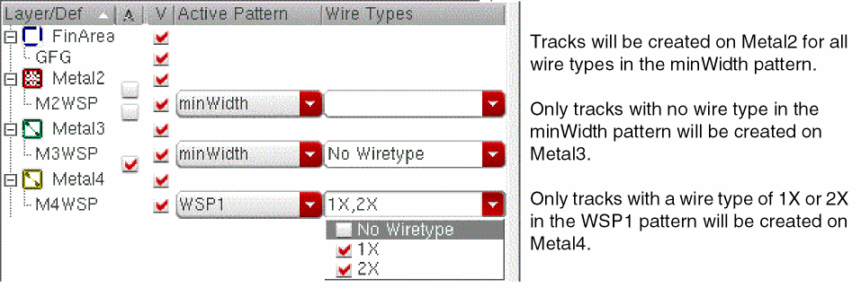

Specifying the Active Patterns
Each WSSPDef has a default active pattern. If a WSSPDef has more than one allowed pattern, you can change the active pattern using the Track Pattern assistant.
To choose the Active Pattern for a layer in the Track Pattern table, do the following:
- If needed, click the plus sign (+) to the left of the layer name to expand the layer and show the WSSPDefs for the layer.
- Click Show all if the WSSPDef for the desired WSP is disabled and not visible in the table.
- Click the A column check box for the desired WSP if the WSSPDef is currently disabled.
-
Choose a WSP from the Active Pattern drop-down list of allowed patterns.
The selected WSP is the active pattern for the layer. -
(Optional) Choose one or more wire types from the Wire Types drop-down list.
The active pattern specifies the width and spacing for a set of tracks. Each track can have an optional wire type. If Wire Types is empty, then tracks will be created in the canvas for all wire types in the active WSP. Otherwise, tracks will be created only for the selected wire types. The following example shows different Wire Types selections for Metal2, Metal3, and Metal4.

Related Topics
Launching the Track Pattern Assistant
Track Pattern Assistant Toolbar
Return to top